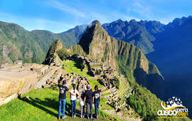

Viajes a Conocer lo mejor del PERU
PAQUETE DE VACACIONES PERU: VIAJE A AREQUIPA, CUSCO Y MACHU PICCHU 7 DIAS
En este paquete de Vacaciones Peru podrás viajar y conocer lo mejor del Sur del Peru, en un tour que dura una semana. La ciudad blanca de Arequipa es una de las ciudades más importantes del Peru, famosa por estar ubicada a los pies de un volcán llamado Misti, así también podrás conocer el "Cañón del Colca" uno de los más profundos del Mundo ubicado a los 3500 metros sobre el nivel del mar, en este lugar podrás apreciar el vuelo de los Cóndores, aves emblemáticas en los andes que están en peligro de extinción.
Finalmente visitarás Cusco y Machu Picchu, donde conocerás las magníficas obras que dejo la cultura Inca, una de las civilizaciones más importantes en la historia de la humanidad. A continuación te mostramos un resumen del itinerario:
DÍA 1: LIMA - AREQUIPA.
Bienvenida en el aeropuerto y por la tarde tour por la ciudad blanca de Arequipa. Noche en Arequipa
DÍA 2-3: AREQUIPA – VALLE DEL COLCA.
Partimos muy temprano y nos dirigiremos al "Valle del Colca". Al día siguiente podremos apreciar el vuelo de los cóndores y los pueblitos que son parte del "Cañón del Colca"
DÍA 4: CUSCO CIUDAD Y ALREDEDORES
Recorreremos la mágica ciudad de Cusco y las construcciones Inca que rodean la Ciudad. Empezando en su Catedral, Qorikancha, Sacsayhuaman, Qenqo, Puka Pukara y finalmente Tambomachay. Noche en Cusco.
DÍA 5: VALLE SAGRADO – AGUAS CALIENTES.
Temprano en la mañana visitaremos el Valle Sagrado. Empezaremos por Pisac, luego viajaremos a Urubamba para almorzar y después visitamos Ollantaytambo, donde abordaremos el tren para llegar al poblado de Aguas Calientes (Machu Picchu pueblo), donde descansaremos para al dia siguiente muy temprano visitar la ciudadela de Machu Picchu. Noche en Aguas Calientes.
DÍA 6: CUSCO - MACHU PICCHU - CUSCO.
Muy temprano tomamos el bus que nos llevará hasta la ciudadela de Machu Picchu, podremos apreciar el amanecer en la hermosa ciudad Inca, en lo alto de las montañas aprenderás de su historia y arquitectura y sobre todo sentirás esa energía impresionante que sólo te brinda Machu Picchu. Por la tarde abordaremos el tren de retorno hasta la estacion de Ollantaytambo, donde un personal de la empresa estará esperando por usted para trasladarlo en nuestra movilidad hasta su hotel en Cusco. Noche en Cusco.
